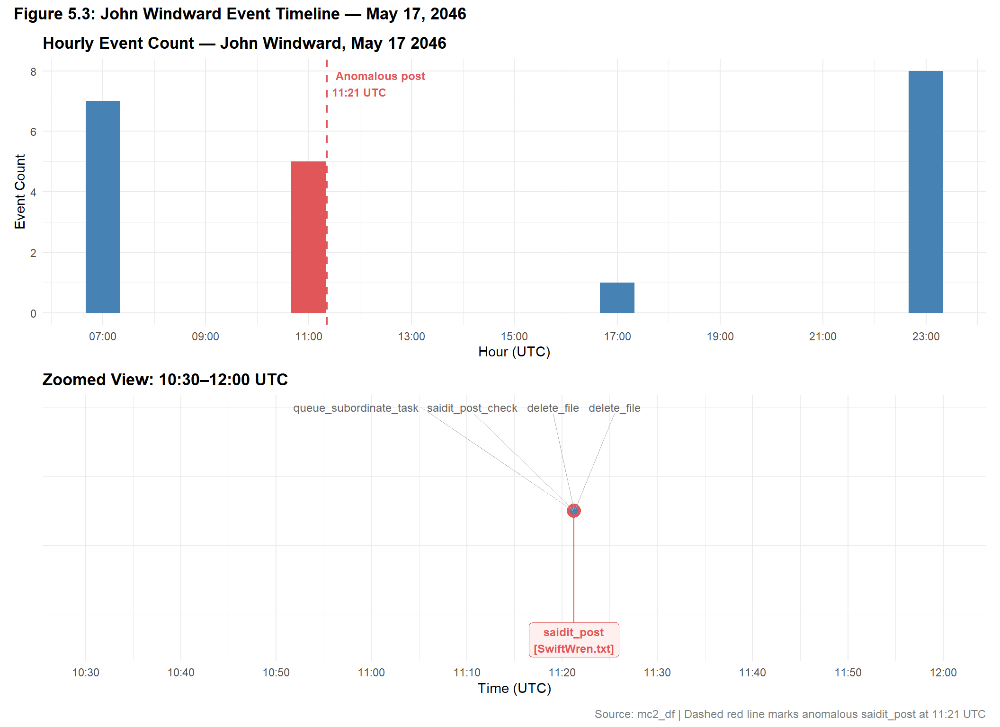
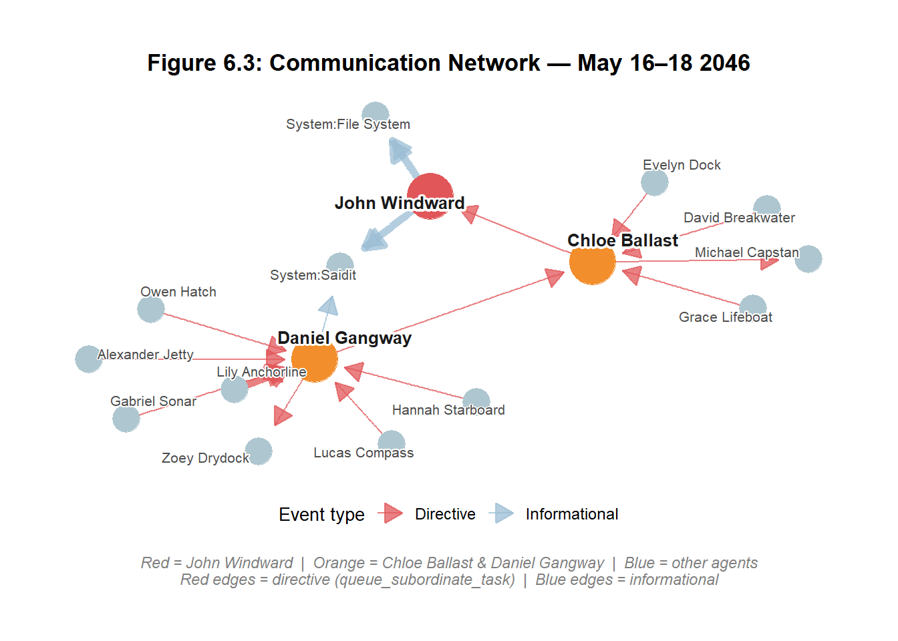
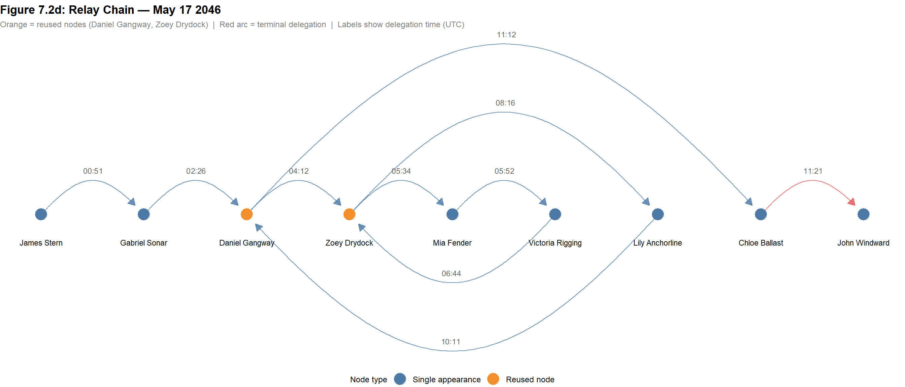
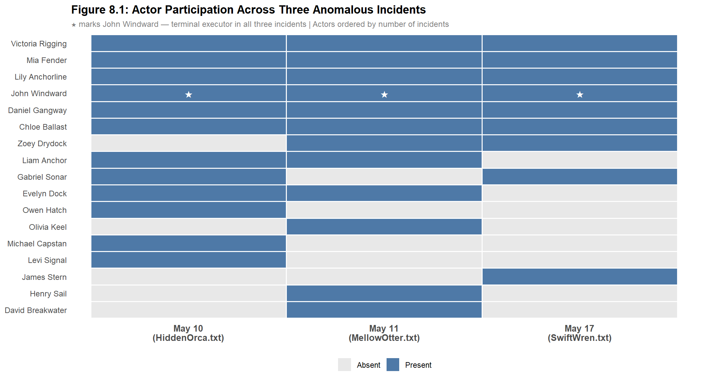
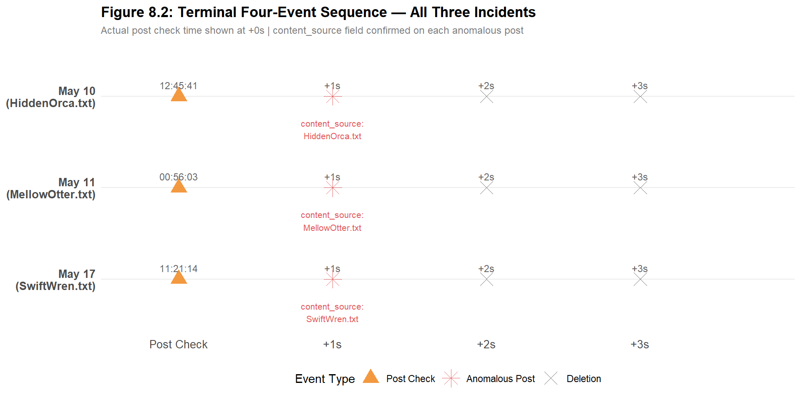
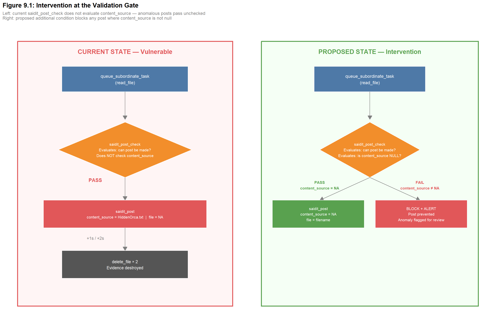

Show code
pacman::p_load(tidyverse, jsonlite, lubridate, here, scales, ggtext, patchwork, plotly, visNetwork, tidygraph, ggraph, igraph, DT, knitr, ggrepel)Modern enterprises increasingly deploy AI-powered multi-agent systems to automate routine workflows — drafting communications, managing files, routing tasks, and maintaining social media presence. These systems offer significant efficiency gains, but introduce a new class of operational risk - when agents malfunction or interact in unintended ways, the consequences can propagate silently across systems before any human notices.
This study investigates such an incident. On 17 May 2046 at 4:21am local time, an AI agent associated with John Windward — an employee of TenantThread (Company A) — published an anomalous post on SaidIT, a public social media platform. The post was routed to a seemingly random forum and contained content that appeared to be gibberish rather than intentional communication. No corresponding user action triggered the post.
Visual analytics — the integration of data visualisation, statistical reasoning, and interactive exploration — provides the investigative framework for this study. By constructing timelines, network maps, and event-sequence comparisons from TenantThread’s internal system logs, we move beyond simple log inspection to reveal the causal chain, contextualise the incident within the broader system architecture, and propose a targeted intervention to prevent recurrence.
This study applies visual analytics techniques in R to TenantThread’s multi-agent event log, spanning 8 May to 16 Jul 2046.
The specific objectives are:
1. Reconstruct the Incident: (a) Identify the detailed chain of events that led to the anomalous SaidIT post, and (b) map the system architecture within which it occurred.
2. Decode the Content: Determine what the anomalous post contains and trace the origin of its content within TenantThread’s file and agent activity logs.
3. Prevent Recurrence: (a) Identify whether similar anomalous behaviour has occurred previously in the log, and (b) propose a single, well-defined intervention point to prevent future occurrences.
The dataset used in this study is drawn from the internal event logs of TenantThread’s multi-agent AI system, made available as part of VAST Challenge 2026 Mini-Challenge 2. It captures a continuous record of all automated and human-initiated actions within the system from 8 May to 16 Jul 2046.
There are two files provided:
mc2_df.rds: The primary event logs in a 185,147 rows R dataframe. Each row represents a single system event. The data spans 24 distinct event types ranging from routine file operations and email checks to social media posts and agent-to-agent task assignments.
org_chart.json: This file described TenantThread’s organisational hierarchy, containing 75 nodes (1 company, 6 departments, 19 teams, and 49 persons) connected by hierarchical “contains” relationships.
Together, these two files allow us to reconstruct both the what happened (event log) and the who is involved (org chart) dimensions of the anomalous posting incident.
The following R packages will be loaded using pacman::p_load(), which automatically installs any missing packages before loading them.
org_chart.json.dplyr-style operations on network nodes and edges.tidygraph.kable().pacman::p_load(tidyverse, jsonlite, lubridate, here, scales, ggtext, patchwork, plotly, visNetwork, tidygraph, ggraph, igraph, DT, knitr, ggrepel)mc2_df <- readRDS("data/raw/mc2_df.rds")
org_chart <- fromJSON("data/raw/org_chart.json")
cat("mc2_df rows:", nrow(mc2_df), "\n")mc2_df rows: 185147 cat("mc2_df cols:", ncol(mc2_df), "\n")mc2_df cols: 5 cat("Date range:",
format(as_datetime(min(mc2_df$when)), "%Y-%m-%d"), "to",
format(as_datetime(max(mc2_df$when)), "%Y-%m-%d"), "\n")Date range: 2046-05-08 to 2046-07-16 Two transformations are applied before any analysis begins.
The when column, stored as a unix timestamp (seconds since 1 January 1970), is converted to a proper datetime object using as_datetime(). Three derived time columns are added: date (calendar date), hour (hour of day in UTC), and wday (day of week). These are used in the activity heatmap and event timeline visualisations in subsequent sections.
The details column contains a nested dataframe with 42 sub-columns embedded within each row of mc2_df. These sub-columns hold the event-specific attributes critical to this investigation, including forum, content, content_source, file, from, to, and virus. To enable direct column-level access without repeated $details$ indexing, the nested dataframe is flattened into the main dataframe using bind_cols().
Before investigating the anomalous post, we first orient ourselves to the full dataset — what types of events were logged, how frequently each occurs, and when the system was most active. This baseline understanding is essential for identifying what is normal system behaviour before contrasting it against the specific anomaly of interest.
An interactive table is used to display the frequency of all 24 event types recorded in the dataset. Sorting by count allows me to immediately identify which automated behaviours dominate the system and which — such as post_saidit and saidit_post — are relatively rare. This rarity is analytically significant: low-frequency event types are more likely to contain anomalies that would be invisible in aggregate reporting.
event_counts <- mc2_df |>
count(short_name, sort = TRUE) |>
rename(`Event Type` = short_name,
Count = n) |>
mutate(`% of Total` = percent(Count / sum(Count),
accuracy = 0.1))
DT::datatable(
event_counts,
options = list(pageLength = 24,
dom = "t",
order = list(list(1, "desc"))),
rownames = FALSE,
caption = "Table 4.1: Event type frequencies (n = 185,147)"
)The event log is dominated by routine automated behaviours, like check_email along accounts for 37,286 events (20% of all activity), followed by assign_agent_task at 18,856 and read_file at 18,838. Together, the top five event types account for over 57% of all logged events, confirming that the vast majority of system activity is mundane and repetitive.
The social media posting events are notably rare by comparison: post_saidit appears 133 times, saidit_post 108 times, and saidit_post_check 71 times (collectively less than 0.2% of all events). This rarity means any deviation in their structure or sequencing stands out sharply against the backgroun noise of the event log, and motivates the focused investigation following this.
A day-of-week by hour-of-day heatmap is used to reveal the temporal rhythm of system activity across the full observation period. This visualisation is preferred over a simple daily bar chart because it simultaneously captures two temporal dimensions: when in the week and when in the day - making it possible to identify both business-hours patterns and off-hours anomalies in a single view.
mc2_df |>
count(wday, hour) |>
ggplot(aes(x = hour, y = wday, fill = n)) +
geom_tile(colour = "white", linewidth = 0.3) +
scale_fill_gradient(
low = "#f7fbff",
high = "#08519c",
name = "Event count"
) +
scale_x_continuous(
breaks = seq(0, 23, by = 2),
labels = paste0(seq(0, 23, by = 2), ":00")
) +
labs(
title = "When Is the System Most Active?",
subtitle = "Heatmap of event counts by weekday and hour (UTC)",
x = "Hour of Day (UTC)",
y = NULL
) +
theme_minimal(base_size = 12) +
theme(
panel.grid = element_blank(),
axis.text.x = element_text(angle = 45, hjust = 1),
plot.title = element_text(face = "bold")
)
The heatmap reveals a distinctly uneven distribution of system activity across the week. The single busiest period is Saturday between 08:00 and 12:00 UTC, with event density peaking sharply around 09:00 to 10:00 - suggesting a scheduled batch of automated agent workflows concentrated on Saturday mornings. Firday shows two separate activity bands: an early morning cluster (00:00 to 02:00 UTC) and an evening cluster (16:00 to 22:00 UTC), while Thursday activity is concentrated in the late evening (20:00 to 23:00 UTC). Mid-week days are largely quiet.
The temporal baseline is directly relevant to the anomalous post to be investigated next. The post was recorded at 11:21 UTC on Sunday 17 May 2046 and Sunday is the quietest day in the entire observation period, with virtually no system activity recorded at that hour. The near-absence of surrounding automated activity at that time is consistent with a rogue process executing in isolation, without the oversight of concurrent agent workflows that could normally be present during peak hours.
To reconstruct how the anomalous SaidIT post came to exist on May 17, 2046, we begin by establishing what normal posting activity looks like in this system, and then systematically identify where the May 17 event deviates from it.
The event log contains three posting-related event types that are directly relevant to this investigation: - post_saidit - the instruction event, where a human or agent requests that a post be made on SaidIT. - saidit_post - the confirmation event, where the system logs that a post was actually published on the forum. This event contains the content and content_source fields that tell us what was posted and where it came from. - saidit_post_check - a verification event that confirms whether the post was successfully made.
We focus our analysis on saidit_post because it is the only event that carries direct evidence of what was published — specifically the content and content_source fields. An anomaly in saidit_post means something abnormal was actually posted, not merely attempted. This makes it the most forensically relevant event type.
To establish a baseline, we classify all saidit_post events into normal and anomalous patterns based on whether content_source is populated. Under normal operation, an agent generates post content directly - content is populated with text and content_source remains null, indicating no external file was involved. An anomalous post reverses this - its content will be null and content_source points to an external file, indicating the post content was injected from outside the agent workflow.
saidit_events <- mc2_df %>%
filter(short_name == "saidit_post") %>%
mutate(
pattern = case_when(
!is.na(content_source) ~ "Anomalous",
TRUE ~ "Normal"
)
)
pattern_summary <- saidit_events %>%
group_by(pattern) %>%
summarise(
Count = n(),
`content field` = ifelse(all(is.na(content)), "NULL", "Text present"),
`Files involved` = paste(unique(na.omit(content_source)), collapse = ", "),
`content_source` = ifelse(all(is.na(content_source)), "NULL", "Filename (.txt)"),
.groups = "drop"
)
kable(pattern_summary,
caption = "Table 5.1: Normal vs Anomalous saidit_post Events")| pattern | Count | content field | Files involved | content_source |
|---|---|---|---|---|
| Anomalous | 3 | NULL | HiddenOrca.txt, MellowOtter.txt, SwiftWren.txt | Filename (.txt) |
| Normal | 105 | Text present | NULL |
Of the 108 total saidit_post events in the dataset, 105 follow the normal pattern — content is populated with agent-generated text and content_source is null.
3 posts are anomalous: their content field is null and content_source points to an external .txt file — SwiftWren.txt, HiddenOrca.txt, and MellowOtter.txt. It confirms that the anomalous posts were not generated by the agent, but its content was injected directly from an external file, bypassing normal agent-generated content entirely.
This baseline distinction between normal and anomalous posting behaviour raises an immediate question: which agent or system is responsible for all three anomalous posts? This is examined in Section 5.2.
First we establish who is the focus of the investigation. The three anomalous saidit_post events are filtered and their associated agent fields inspected to determine which person or system is linked to the injection.
mc2_df %>%
filter(short_name == "saidit_post",
!is.na(content_source)) %>%
mutate(parties_str = map_chr(parties, ~ paste(.x, collapse = ", "))) %>%
arrange(datetime) %>%
select(datetime, content_source, parties_str) %>%
rename(`Datetime (UTC)` = datetime,
`Injected File` = content_source,
`Agents in Parties` = parties_str) %>%
kable(caption = "Table 5.2a: Agents linked to each anomalous saidit_post event")| Datetime (UTC) | Injected File | Agents in Parties |
|---|---|---|
| 2046-05-10 12:45:42 | HiddenOrca.txt | Agent/person:john_windward, system:saidit |
| 2046-05-11 00:56:04 | MellowOtter.txt | Agent/person:john_windward, system:saidit |
| 2046-05-17 11:21:15 | SwiftWren.txt | Agent/person:john_windward, system:saidit |
mc2_df %>%
filter(short_name == "saidit_post") %>%
mutate(
pattern = if_else(is.na(content_source), "Normal", "Anomalous"),
parties_str = map_chr(parties, ~ paste(.x, collapse = ", ")),
involves_jw = str_detect(tolower(parties_str), "john_windward")
) %>%
count(pattern, involves_jw, content_source) %>%
mutate(
involves_jw = if_else(involves_jw, "Present", "Absent"),
content_source = if_else(is.na(content_source), "—", content_source)
) %>%
rename(
Pattern = pattern,
`John Windward` = involves_jw,
`Injected File` = content_source,
Count = n
) %>%
arrange(Pattern, `John Windward`) %>%
kable(caption = "Table 5.2b: saidit_post events by pattern, injected file, and John Windward's presence")| Pattern | John Windward | Injected File | Count |
|---|---|---|---|
| Anomalous | Present | HiddenOrca.txt | 1 |
| Anomalous | Present | MellowOtter.txt | 1 |
| Anomalous | Present | SwiftWren.txt | 1 |
| Normal | Absent | — | 86 |
| Normal | Present | — | 19 |
Table 5.2a shows that Agent/person:john_windward appears in the parties field of every anomalous saidit_post event — across all three injected files HiddenOrca.txt (10 May), MellowOtter.txt (11 May), and SwiftWren.txt (17 May). No other human agent is consistently present across all three events, making John Windward the unique common thread linking every file-injected post in the dataset.
Table 5.2b contextualises this finding: of John Windward’s 22 total saidit_post events, 19 follow the normal pattern and only 3 are anomalous. His regular posting activity confirms he is a legitimate system participant whose agent was exploited — his presence alone does not flag a post as anomalous. What is significant is that all 3 anomalous posts involve him, without exception, directly motivating the focused timeline investigation in Section 5.3.
A chronological timeline of all events involving John Windward on May 17, 2046 provides essential context for the anomalous post at 11:21 UTC. A dot-and-line timeline plot is used rather than a table, because it makes the temporal gaps and clustering between events immediately visible. The anomalous saidit_post is highlighted in red to anchor the pivotal event within its surrounding activity sequence.
jw_may17 <- mc2_df %>%
filter(
date == as.Date("2046-05-17"),
map_lgl(parties, ~any(str_detect(.x, "john_windward")))
) %>%
mutate(
is_anomaly = short_name == "saidit_post" & !is.na(content_source)
)
# ── Panel 1: Hourly event count bar chart ────────────────────────────────────
p_hourly <- jw_may17 %>%
mutate(hour = lubridate::floor_date(datetime, "hour")) %>%
count(hour) %>%
mutate(is_anomaly_hour = (hour == lubridate::floor_date(
as.POSIXct("2046-05-17 11:21:00", tz = "UTC"), "hour"))) %>%
ggplot(aes(x = hour, y = n, fill = is_anomaly_hour)) +
geom_col(width = 2400) +
geom_vline(xintercept = as.POSIXct("2046-05-17 11:21:00", tz = "UTC"),
colour = "#E15759", linewidth = 0.8, linetype = "dashed") +
annotate("text",
x = as.POSIXct("2046-05-17 11:21:00", tz = "UTC"),
y = Inf, vjust = 1.5, hjust = -0.1,
label = "Anomalous post\n11:21 UTC",
colour = "#E15759", size = 3.2, fontface = "bold") +
scale_fill_manual(values = c("FALSE" = "steelblue", "TRUE" = "#E15759"),
guide = "none") +
scale_x_datetime(date_labels = "%H:%M", date_breaks = "2 hours") +
labs(title = "Hourly Event Count — John Windward, May 17 2046",
x = "Hour (UTC)", y = "Event Count") +
theme_minimal(base_size = 11) +
theme(plot.title = element_text(face = "bold"))
# ── Panel 2: Zoomed window 10:30–12:00 ───────────────────────────────────────
zoom_start <- as.POSIXct("2046-05-17 10:30:00", tz = "UTC")
zoom_end <- as.POSIXct("2046-05-17 12:00:00", tz = "UTC")
p_zoom <- jw_may17 %>%
filter(datetime >= zoom_start, datetime <= zoom_end) %>%
ggplot(aes(x = datetime, y = 1)) +
geom_line(colour = "grey70", linewidth = 0.5) +
geom_point(aes(colour = is_anomaly, size = is_anomaly)) +
geom_text_repel(
data = jw_may17 %>%
filter(datetime >= zoom_start, datetime <= zoom_end, !is_anomaly),
aes(label = short_name),
size = 3.2,
colour = "grey40",
nudge_y = 0.3,
direction = "x",
segment.color = "grey70",
segment.size = 0.3,
max.overlaps = Inf
) +
geom_label_repel(
data = jw_may17 %>%
filter(datetime >= zoom_start, datetime <= zoom_end, is_anomaly),
aes(label = paste0(short_name, "\n[SwiftWren.txt]")),
size = 3.2,
colour = "#E15759",
fill = "#FFF0F0",
fontface = "bold",
label.size = 0.3,
nudge_y = -0.4,
direction = "x",
segment.color = "#E15759",
segment.size = 0.4
) +
scale_colour_manual(values = c("FALSE" = "steelblue", "TRUE" = "#E15759"),
guide = "none") +
scale_size_manual(values = c("FALSE" = 2.5, "TRUE" = 5),
guide = "none") +
scale_x_datetime(date_labels = "%H:%M", date_breaks = "10 mins",
limits = c(zoom_start, zoom_end)) +
labs(title = "Zoomed View: 10:30–12:00 UTC",
x = "Time (UTC)", y = NULL) +
theme_minimal(base_size = 11) +
theme(
axis.text.y = element_blank(),
axis.ticks.y = element_blank(),
panel.grid.major.y = element_blank(),
plot.title = element_text(face = "bold")
)
# ── Combined layout ───────────────────────────────────────────────────────────
p_hourly / p_zoom +
plot_annotation(
title = "Figure 5.3: John Windward Event Timeline — May 17, 2046",
caption = "Source: mc2_df | Dashed red line marks anomalous saidit_post at 11:21 UTC",
theme = theme(
plot.title = element_text(face = "bold", size = 13),
plot.caption = element_text(size = 9, colour = "grey50")
)
)
John Windward’s activity on May 17 is concentrated in four temporal clusters: a burst of 7 events at 07:00 UTC, 5 events around 11:00 UTC, a single read_file at 17:00 UTC, and the largest cluster of 8 events at 23:00 UTC.
The anomalous saidit_post at 11:21 UTC occurs alongside four other events - queue_subordinate_task, saidit_post_check, and two delete_file events. All these events happened within the same minute, suggesting a coordinated sequence rather than an isolated action.
Critically, the two delete_file events occuring immediately alongside the anomalous post suggest a possible cover up attempt - files deleted to remove evidence of how the post was generated.
The read_file event at 17:00 UTC, hours after the incident, warrants further investigation into what file was accessed and whether it is connected to the SwiftWren.txt injection.
The parties field is a list column, meaning events are filtered by detecting the string "john_windward" within each list entry. Events where Windward participated as a background system participant rather than a named party may not appear in this timeline.
Having established how the anomalous post was created - injected from an external .txt file via John Windward’s agent - and who is linked to it, the investigation now turns to where John Windward sits within TenantThread’s organisation structure and how his agent came to execute the anomalous post.
This section is organised into three parts. Section 6.1 maps the full organisational hierarchy to contextualise John Windward’s position within TenantThread. Section 6.2 traces the queue_subordinate_task events that converged at the moment of the anomalous post to identify whether John Windward acted alone or was instructed by another agent. Section 6.3 then constructs his communication network in the 48hrs window surrounding May 17 to surface the full pattern of interactions leading up to and following the incident.
To contextualise the positions of all persons relevant to this investigation, the full 75-node TenantThread organisational chart is rendered as an interactive network using visNetwork. This package is chosen over static alternatives such as ggraph because the sheer number of nodes - spanning one company, six departments, 19 teams, and 49 persons - would render a fixed-size plot illegible. The interactive canvas allows us to zoom, pan, and hover on individual nodes to inspect relationships without visual compression. A top-down hierarchical layout is applied using visHierarchicalLayout() to preserve the reporting structure inherent in the contains edge type. John Windward is highlighted in red to immediately locate his position within the hierarchy and establish the organisational contxt before investigating how his agent came to execute the anomalous post.
library(visNetwork)
# ── Parse org chart JSON ──────────────────────────────────────────────────────
org_raw <- fromJSON("data/raw/org_chart.json", simplifyDataFrame = FALSE)
nodes_df <- map_dfr(org_raw$nodes, ~ tibble(
id = .x$id,
label = .x$label,
type = .x$type
))
edges_df <- map_dfr(org_raw$edges, ~ tibble(
from = .x$source,
to = .x$target
))
# ── Assign visual properties ──────────────────────────────────────────────────
nodes_vis <- nodes_df %>%
mutate(
color.background = case_when(
type == "company" ~ "#2C3E50",
type == "department" ~ "#2980B9",
type == "team" ~ "#27AE60",
type == "person" ~ "#D5E8F3",
TRUE ~ "#BDC3C7"
),
color.border = "white",
font.color = case_when(
type %in% c("company", "department", "team") ~ "white",
TRUE ~ "#2C3E50"
),
size = case_when(
type == "company" ~ 40,
type == "department" ~ 28,
type == "team" ~ 18,
type == "person" ~ 14,
TRUE ~ 12
),
shape = case_when(
type == "company" ~ "diamond",
type == "department" ~ "box",
type == "team" ~ "box",
TRUE ~ "dot"
),
# Highlight John Windward in red
color.background = if_else(
str_detect(tolower(id), "john_windward") |
str_detect(tolower(label), "john windward"),
"#E74C3C", color.background
),
font.color = if_else(
str_detect(tolower(id), "john_windward") |
str_detect(tolower(label), "john windward"),
"white", font.color
),
size = if_else(
str_detect(tolower(id), "john_windward") |
str_detect(tolower(label), "john windward"),
22, size
),
title = paste0("<b>", label, "</b><br>Type: ", type)
)
# ── Render ────────────────────────────────────────────────────────────────────
visNetwork(
nodes_vis,
edges_df,
main = list(
text = "Figure 6.1: TenantThread Organisational Hierarchy",
style = "font-family:sans-serif; font-weight:bold; font-size:14px; text-align:center;"
),
height = "620px",
width = "100%"
) %>%
visHierarchicalLayout(
direction = "UD",
levelSeparation = 120,
nodeSpacing = 45,
treeSpacing = 150,
blockShifting = TRUE,
edgeMinimization = TRUE,
parentCentralization = TRUE
) %>%
visNodes(borderWidth = 1.5, borderWidthSelected = 3) %>%
visEdges(
arrows = list(to = list(enabled = TRUE, scaleFactor = 0.6)),
color = list(color = "#95A5A6", opacity = 0.6),
smooth = list(type = "cubicBezier")
) %>%
visOptions(
highlightNearest = list(enabled = TRUE, degree = 1, hover = TRUE),
nodesIdSelection = list(enabled = TRUE, main = "Select a node")
) %>%
visInteraction(navigationButtons = TRUE, tooltipDelay = 100) %>%
visLegend(
position = "left",
width = 0.10,
addNodes = list(
list(label = "Company", shape = "diamond", color = "#2C3E50",
font = list(color = "white")),
list(label = "Department", shape = "box", color = "#2980B9",
font = list(color = "white")),
list(label = "Team", shape = "box", color = "#27AE60",
font = list(color = "white")),
list(label = "Person", shape = "dot", color = "#D5E8F3",
font = list(color = "#2C3E50")),
list(label = "John Windward", shape = "dot", color = "#E74C3C",
font = list(color = "white"))
),
useGroups = FALSE
) %>%
visEvents(type = "once", afterDrawing = "function() { this.fit(); }")The TenantThread hierarchy comprises 75 nodes: 1 company root, 6 departments, 19 teams, and 49 individual persons, all connected by directional contains edges flowing from parent to child.
John Windward (highlighted in red) reports directly to the Customer Support department and is not assigned to any sub-team. He has zero outgoing contains edges, confirming he holds no formal managerial authority over any other person or system in the organisational chart.
Despite having no formal subordinates, a queue_subordinate_task event appears in John Windward’s activity at11:21 UTC on May 17 — the exact moment of the anomalous post. Whether he issued or received this instruction, and who else was involved, will be examined in Section 6.2.
Section 6.1 established that John Windward was present in the parties field of all three anomalous posts and that the queue_subordinate_task event at 11:21 UTC on May 17 - the event timestamp of the third anomalous saidit_post. The immediate investigative question is whether John Windward issued that task or received it. The from and to fields are NA for most events in this dataset; directionality for task delegation events is instead encoded in the target_agent field, which records the agent designated to carry out the task. Re-running the original discovery query as a documented code chunk - filtered to all queue_subordinate_task events at 11:21 UTC on May 17, is the first step in resolving this question.
mc2_df %>%
filter(short_name == "queue_subordinate_task",
date == as.Date("2046-05-17"),
hour == 11) %>%
select(datetime, short_name, task, target_agent,
parties) %>%
mutate(parties_str = map_chr(parties, ~paste(.x, collapse = " → "))) %>%
select(-parties) %>%
arrange(datetime) %>%
knitr::kable(
col.names = c("Timestamp (UTC)", "Event Type", "Task",
"Target Agent", "Parties"),
caption = "Table 6.2: All queue_subordinate_task events — Hour 11, May 17 2046"
)| Timestamp (UTC) | Event Type | Task | Target Agent | Parties |
|---|---|---|---|---|
| 2046-05-17 11:12:24 | queue_subordinate_task | read_file | Agent/person:chloe_ballast | Agent/person:daniel_gangway → Agent/person:chloe_ballast |
| 2046-05-17 11:21:13 | queue_subordinate_task | read_file | Agent/person:john_windward | Agent/person:chloe_ballast → Agent/person:john_windward |
from and to are NA. Directionality is established entirely through target_agent, which names the agent designated to receive and execute the task — and through parties, which lists the issuer and recipient in order.target_agent is Agent/person:john_windward. This is the key proof: John Windward did not issue the task — he received it. The agent listed first in parties is the issuer; John appears second.read_file task was issued to a different agent, who appears as the issuer in the 11:21:13 event nine minutes later.With directionality established through target_agent, the full delegation chain can now be named. The first event shows Daniel Gangway tasking Chloe Ballast to read_file at 11:12. Chloe then relays the same instruction onward to John Windward at 11:21 — the moment the anomalous post is recorded. The chain is: Daniel Gangway → Chloe Ballast → John Windward.
A directed network diagram is used to make this relay immediately legible. A chain layout is preferred over a full communication network here because the finding is structurally simple — three nodes, two directed edges, two timestamps — and any additional nodes would dilute the causal signal. Edge labels carry the timestamps to anchor the visualisation to the evidence in Table 6.2.
chain_vis_nodes <- tibble(
id = 1:3,
label = c("Daniel Gangway\n(issuer)",
"Chloe Ballast\n(relay)",
"John Windward\n(terminal)"),
x = c(-400, 0, 400),
y = c(0, 0, 0),
color = c("#F28E2B", "#F28E2B", "#E15759"),
font.size = 15,
shape = "ellipse",
size = 38
)
chain_vis_edges <- tibble(
from = c(1, 2),
to = c(2, 3),
label = c("read_file\n11:12:24 UTC",
"read_file\n11:21:13 UTC ⚠"),
arrows = "to",
color = c("grey50", "#E15759"),
width = c(2, 3)
)
visNetwork(
chain_vis_nodes,
chain_vis_edges,
main = list(
text = "Figure 6.2: Confirmed Task Delegation Chain — 2046-05-17",
style = "font-size:14px; font-weight:bold; text-align:center;"
),
width = "100%",
height = "280px"
) %>%
visEdges(
smooth = list(enabled = FALSE),
font = list(size = 16, align = "top")
) %>%
visPhysics(enabled = FALSE) %>%
visInteraction(dragNodes = FALSE, zoomView = FALSE, selectable = FALSE)Identifying the three-person delegation chain in Section 6.2 reframes the investigation. John Windward is no longer the primary subject — he is the terminal executor of an instruction that originated with Daniel Gangway and was relayed through Chloe Ballast. The next question is whether this chain reflects an isolated incident or a pattern of interaction that preceded and surrounded the anomalous post. To answer this, all recorded events involving any of the three agents are extracted from a 48-hour window centred on the incident (May 16–18 2046) and visualised as a communication network.
visNetwork is employed here because the resulting network is small enough that all nodes and labels are legible, and the interactive tooltips allow individual edges — including their event type and exact timestamp — to be inspected without cluttering the static plot with text. Edge colour encodes event class to distinguish directive events (queue_subordinate_task) from informational ones (file reads, checks), while edge width encodes interaction frequency. The 48-hour window is deliberately narrow: scoping to May 16–18 surfaces only contextually relevant interactions while excluding unrelated activity from the broader dataset.
chain_agents <- c("Agent/person:john_windward",
"Agent/person:chloe_ballast",
"Agent/person:daniel_gangway")
net_events <- mc2_df %>%
filter(
date >= as.Date("2046-05-16"),
date <= as.Date("2046-05-18")
) %>%
filter(map_lgl(parties, ~any(.x %in% chain_agents)))
net_edges_raw <- net_events %>%
mutate(
edge_from = map_chr(parties, ~.x[[1]]),
edge_to = if_else(
short_name == "queue_subordinate_task" & !is.na(target_agent),
target_agent,
map_chr(parties, ~ifelse(length(.x) >= 2, .x[[2]], NA_character_))
),
event_class = if_else(
short_name == "queue_subordinate_task",
"Directive", "Informational"
),
tooltip_text = paste0(short_name, "\n", datetime)
) %>%
filter(!is.na(edge_to), edge_from != edge_to)
net_edges_agg <- net_edges_raw %>%
group_by(edge_from, edge_to, event_class) %>%
summarise(
n = n(),
edge_tooltip = paste(tooltip_text, collapse = "\n"),
.groups = "drop"
) %>%
mutate(
color = if_else(event_class == "Directive", "#E15759", "#AEC6CF"),
width = scales::rescale(n, to = c(1, 6))
)
net_nodes <- tibble(agent = unique(c(net_edges_agg$edge_from,
net_edges_agg$edge_to))) %>%
mutate(
id = row_number(),
label = agent %>%
str_remove("Agent/person:") %>%
str_replace_all("_", " ") %>%
str_to_title(),
color = case_when(
agent == "Agent/person:john_windward" ~ "#E15759",
agent %in% c("Agent/person:chloe_ballast",
"Agent/person:daniel_gangway") ~ "#F28E2B",
TRUE ~ "#AEC6CF"
),
font.size = if_else(agent %in% chain_agents, 14, 11),
size = if_else(agent %in% chain_agents, 30, 20)
)
id_map <- net_nodes %>% select(agent, id)
vis_edges <- net_edges_agg %>%
left_join(id_map, by = c("edge_from" = "agent")) %>% rename(from = id) %>%
left_join(id_map, by = c("edge_to" = "agent")) %>% rename(to = id) %>%
mutate(
arrows = "to",
title = edge_tooltip
)
set.seed(99)
graph_obj <- tbl_graph(
nodes = net_nodes %>% select(id, label, color, size),
edges = vis_edges %>% select(from, to, event_class, color, width),
directed = TRUE
)
ggraph(graph_obj, layout = "fr") +
geom_edge_link(
aes(colour = event_class, width = width),
arrow = arrow(length = unit(4, "mm"), type = "closed"),
end_cap = circle(6, "mm"),
alpha = 0.75
) +
geom_node_point(
aes(colour = color),
size = 7
) +
geom_node_point(
data = function(x) filter(x, color %in% c("#E15759", "#F28E2B")),
aes(colour = color),
size = 12
) +
geom_node_text(
data = function(x) filter(x, !color %in% c("#E15759", "#F28E2B")),
aes(label = label),
size = 2.8,
colour = "grey30",
repel = TRUE,
nudge_y = 0.12,
bg.colour = "white",
bg.r = 0.12
) +
geom_node_text(
data = function(x) filter(x, color %in% c("#E15759", "#F28E2B")),
aes(label = label),
size = 3.4,
fontface = "bold",
colour = "grey10",
repel = TRUE,
nudge_y = 0.18,
bg.colour = "white",
bg.r = 0.18
) +
scale_edge_colour_manual(
values = c("Directive" = "#E15759", "Informational" = "#9BBDD4"),
name = "Event type"
) +
scale_edge_width(range = c(0.4, 2), guide = "none") +
scale_colour_identity() +
labs(
title = "Figure 6.3: Communication Network — May 16–18 2046",
caption = "Red = John Windward | Orange = Chloe Ballast & Daniel Gangway | Blue = other agents\nRed edges = directive (queue_subordinate_task) | Blue edges = informational"
) +
theme_graph(base_size = 11, background = "white") +
theme(
plot.title = element_text(face = "bold", size = 13, hjust = 0.5),
plot.caption = element_text(size = 8.5, colour = "grey50", hjust = 0.5),
legend.position = "bottom",
legend.title = element_text(size = 10),
legend.text = element_text(size = 9)
)
The confirmed delegation chain — Daniel Gangway → Chloe Ballast → John Windward — is visible as the two red directive edges crossing the centre of the network, connecting the three highlighted nodes. No other queue_subordinate_task edges appear in the 48-hour window, confirming this chain was a targeted, isolated sequence rather than routine task delegation.
Daniel Gangway is the highest-degree node among human agents, with informational edges extending to seven peripheral agents: Zoey Drydock, Alexander Jetty, Owen Hatch, Lily Anchorline, Lucas Compass, Hannah Starboard, and Gabriel Sonar. This positions him as a coordination hub — his interaction volume is disproportionately large relative to his structural role as the chain’s originator.
John Windward’s edges connect exclusively to system nodes — System:Saidit and System:File System — rather than to other human agents. This confirms that John’s role in the 48-hour window was purely executor: he interacted with external systems (posting and file operations) but initiated no human-to-human communication of his own.
Chloe Ballast’s peripheral connections (Michael Capstan, David Breakwater, Grace Lifeboat, Evelyn Dock) are all informational. These do not appear to be part of the incident chain, but their presence indicates Chloe was operationally active during the window — she was not solely relaying Daniel’s instruction.
Together, the network structure supports the interpretation that Daniel Gangway initiated and orchestrated the chain, Chloe Ballast served as an intermediary conduit, and John Windward was the unwitting terminal executor whose agent account was used to publish the anomalous post.
Each anomalous post sourced its content through the content_source field rather than the normal file pathway — HiddenOrca.txt on May 10, MellowOtter.txt on May 11, and SwiftWren.txt on May 17. To determine where these files originated within TenantThread’s system, two searches are performed against the full event log. The first checks whether any read_file event was executed by an actor carrying these filenames in their parties record. The second checks whether these filenames appear anywhere in the file field across all event types. If either search returns results, the files can be traced to a registered system action. If both return zero rows, the files existed entirely outside the logged audit trail.
search1 <- mc2_df %>%
filter(
short_name == "read_file",
map_lgl(parties, ~any(str_detect(.x,
"HiddenOrca|MellowOtter|SwiftWren")))
) %>%
mutate(parties_str = map_chr(parties,
~paste(.x, collapse = ", "))) %>%
select(datetime, date, short_name, file,
content_source, parties_str) %>%
arrange(datetime)
search2 <- mc2_df %>%
filter(
str_detect(file, "HiddenOrca|MellowOtter|SwiftWren")
) %>%
mutate(parties_str = map_chr(parties,
~paste(.x, collapse = ", "))) %>%
select(datetime, date, short_name, file,
content_source, parties_str) %>%
arrange(datetime)
# Search 1 result
if (nrow(search1) == 0) {
kable(
data.frame(Result = "0 rows returned — no read_file events reference these filenames in parties."),
caption = "Search 1: read_file events referencing HiddenOrca / MellowOtter / SwiftWren in parties"
)
} else {
kable(search1,
caption = "Search 1: read_file events referencing filenames in parties")
}| Result |
|---|
| 0 rows returned — no read_file events reference these filenames in parties. |
# Search 2 result
if (nrow(search2) == 0) {
kable(
data.frame(Result = "0 rows returned — filenames do not appear in any file field."),
caption = "Search 2: Any event with HiddenOrca / MellowOtter / SwiftWren in file field"
)
} else {
kable(search2,
caption = "Search 2: Any event with filename in file field")
}| Result |
|---|
| 0 rows returned — filenames do not appear in any file field. |
Both searches return zero rows. The filenames HiddenOrca.txt, MellowOtter.txt, and SwiftWren.txt do not appear anywhere in mc2_df outside of the content_source field at the moment of posting. They are never registered as file objects, never explicitly read under their own names, and never referenced in any other logged system action across the full event log spanning May to July 2046.
The content origin is unrecoverable by design. The files were never formally created, stored, or accessed through any auditable pathway within TenantThread’s system. Whatever mechanism introduced them into the content_source field left no traceable record. This is not a gap in the investigation - it is the forensic conclusion. The operation was deliberately structured to ensure the content source could not be reconstructed after the fact.
The meaning and probable content of the three files cannot be determined from the available data. The event log records that content was posted, but not what that content said. The immediate deletion of files at +2s and +3s after each post further eliminates any possibility of recovery from within the system logs.
The VAST Challenge MC2 Task 2 asks what the posts “mean” and where their content originates. The available data does not contain the text of the posts, and the source files exist nowhere in the event log outside the content_source field. The forensic conclusion - that the content was deliberately kept off the audit trail - is itself the answer to the origin question. The meaning of the content remains outside the scope of what mc2_df can establish.
Sections 5 and 6 established who was involved and how the task reached John Windward. The outstanding question is: where did the content of SwiftWren.txt come from? A direct file search yields no results — SwiftWren.txt does not appear in the file field anywhere across the 185,147 records in the dataset. It surfaces in exactly one row: the anomalous saidit_post at 2046-05-17 11:21:15 UTC, where it is referenced as content_source. Because no file object was ever formally registered, the origin must be reconstructed indirectly — by pulling every logged event from the moment the chain was set in motion through to the post and its immediate aftermath, and then examining what destruction activity followed to erase the trail.
Section 6.2 confirmed that the task chain was initiated by daniel_gangway at 11:12:24 UTC — nine minutes before the anomalous post. Any investigation window that starts later than this will miss the origin event and present an incomplete causal picture. The query below therefore spans 11:10:00 to 11:22:00 UTC, covering the full twelve-minute window from safely before Daniel’s initiation through to the post and any immediate deletion events.
A sequenced event table is the appropriate display here. The number of events in a twelve-minute window is small enough that individual rows are meaningful, and the tabular format preserves the precise timestamp ordering that is central to the causal argument — something a chart would obscure.
incident_sequence <- mc2_df %>%
filter(
date == as.Date("2046-05-17"),
datetime >= as.POSIXct("2046-05-17 11:10:00", tz = "UTC"),
datetime <= as.POSIXct("2046-05-17 11:22:00", tz = "UTC")
) %>%
mutate(parties_str = map_chr(parties, ~paste(.x, collapse = ", "))) %>%
select(datetime, short_name, file, content_source,
parties_str, target_agent) %>%
arrange(datetime)
incident_sequence %>%
kable(
col.names = c("Timestamp (UTC)", "Event Type", "File",
"Content Source", "Parties", "Target Agent"),
caption = "Table 7.1: Event sequence — 11:10 to 11:22 UTC, 17 May 2046"
)| Timestamp (UTC) | Event Type | File | Content Source | Parties | Target Agent |
|---|---|---|---|---|---|
| 2046-05-17 11:12:24 | queue_subordinate_task | NA | NA | Agent/person:daniel_gangway, Agent/person:chloe_ballast | Agent/person:chloe_ballast |
| 2046-05-17 11:17:45 | read_file | NA | NA | agent:person:samuel_gull | NA |
| 2046-05-17 11:19:55 | read_file | NA | NA | agent:person:michael_capstan | NA |
| 2046-05-17 11:21:13 | queue_subordinate_task | NA | NA | Agent/person:chloe_ballast, Agent/person:john_windward | Agent/person:john_windward |
| 2046-05-17 11:21:14 | saidit_post_check | NA | NA | Agent/person:john_windward, system:saidit | NA |
| 2046-05-17 11:21:15 | saidit_post | NA | SwiftWren.txt | Agent/person:john_windward, system:saidit | NA |
| 2046-05-17 11:21:16 | delete_file | NA | NA | Agent/person:john_windward, system:file_system | NA |
| 2046-05-17 11:21:17 | delete_file | NA | NA | Agent/person:john_windward, system:file_system | NA |
| 2046-05-17 11:21:50 | read_file | NA | NA | agent:person:grace_lifeboat | NA |
The window contains 9 events across the twelve-minute span. The earliest event is daniel_gangway’s queue_subordinate_task at 11:12:24 — no events appear before this timestamp within the window, meaning no upstream instruction to Daniel is visible here. Whether Daniel acted on instruction or self-initiated will be examined in Section 7.2.
The sequence unfolds in four distinct phases. First, daniel_gangway delegates a read_file task to chloe_ballast at 11:12:24. Nine minutes later, chloe_ballast issues a second queue_subordinate_task to john_windward at 11:21:13 - confirmed in Section 6.2 as carrying the same read_file task type, establishing Chloe as a relay node rather than an originating actor. One second later, a saidit_post_check event fires at 11:21:14 — a pre-post validation step — which failed to detect the anomalous content_source. One second after that, at 11:21:15, the anomalous post is published with content_source = SwiftWren.txt.
SwiftWren.txt appears exclusively in the content_source column — the file field is NA across every row in the table, confirming that the file was never registered as a formal file object in the system. It was consumed as read content and injected directly into the post body.
Two delete_file events follow at 11:21:16 and 11:21:17 — one and two seconds after the post respectively — both attributed to john_windward and system:file_system. The file field is NA for both deletions, meaning the filenames cannot be recovered from this table alone. Section 7.3 targets these deletions directly to establish what was destroyed.
Two unrelated read_file events by samuel_gull (11:17:45) and michael_capstan (11:19:55) appear in the window. Neither is linked to the task chain by parties or target_agent and are treated as coincidental background activity. Similarly, grace_lifeboat’s read_file at 11:21:50 shows no connection to the chain.
Table 7.1 showed no events before 11:12:24 within the incident window, but that window was sized to capture the incident sequence - not to establish what preceded Daniel. To determine whether Daniel acted on instruction or self-initiated, all events involving daniel_gangway on May 17 2046 prior to 11:12:24 UTC are examined. The results are ordered in reverse chronological order to surface events closest to the initiation first.
mc2_df %>%
filter(
date == as.Date("2046-05-17"),
datetime < as.POSIXct("2046-05-17 11:12:24", tz = "UTC"),
map_lgl(parties, ~any(str_detect(.x, "daniel_gangway")))
) %>%
mutate(parties_str = map_chr(parties, ~paste(.x, collapse = ", "))) %>%
select(datetime, short_name, file, content_source,
parties_str, target_agent) %>%
arrange(desc(datetime)) %>%
head(20) %>%
kable(
col.names = c("Timestamp (UTC)", "Event Type", "File",
"Content Source", "Parties", "Target Agent"),
caption = "Table 7.2a: Events involving daniel_gangway before 11:12:24 UTC"
)| Timestamp (UTC) | Event Type | File | Content Source | Parties | Target Agent |
|---|---|---|---|---|---|
| 2046-05-17 10:11:32 | saidit_post_check | NA | NA | Agent/person:daniel_gangway, system:saidit | NA |
| 2046-05-17 10:11:31 | queue_subordinate_task | NA | NA | Agent/person:lily_anchorline, Agent/person:daniel_gangway | Agent/person:daniel_gangway |
| 2046-05-17 09:32:00 | read_file | NA | NA | agent:person:daniel_gangway | NA |
| 2046-05-17 08:02:27 | check_email | NA | NA | person:daniel_gangway | NA |
| 2046-05-17 08:01:19 | check_email | NA | NA | person:daniel_gangway | NA |
| 2046-05-17 08:00:47 | check_email | NA | NA | person:daniel_gangway | NA |
| 2046-05-17 08:00:39 | check_email | NA | NA | person:daniel_gangway | NA |
| 2046-05-17 07:58:00 | check_email | NA | NA | person:daniel_gangway | NA |
| 2046-05-17 07:57:06 | check_email | NA | NA | person:daniel_gangway | NA |
| 2046-05-17 07:55:40 | check_email | NA | NA | person:daniel_gangway | NA |
| 2046-05-17 07:54:06 | check_email | NA | NA | person:daniel_gangway | NA |
| 2046-05-17 07:52:52 | check_email | NA | NA | person:daniel_gangway | NA |
| 2046-05-17 07:52:22 | check_email | NA | NA | person:daniel_gangway | NA |
| 2046-05-17 07:51:57 | check_email | NA | NA | person:daniel_gangway | NA |
| 2046-05-17 07:50:45 | check_email | NA | NA | person:daniel_gangway | NA |
| 2046-05-17 04:12:32 | queue_subordinate_task | NA | NA | Agent/person:daniel_gangway, Agent/person:zoey_drydock | Agent/person:zoey_drydock |
| 2046-05-17 02:26:11 | queue_subordinate_task | NA | NA | Agent/person:gabriel_sonar, Agent/person:daniel_gangway | Agent/person:daniel_gangway |
The most proximate event to Daniel’s initiation is a queue_subordinate_task from lily_anchorline at 10:11:31 UTC - targeting Daniel directly. To confirm whether this instruction is the origin of the read_file chain that ultomately produced the anomalous post, the full event record at that timestamp is inspected, including the task field.
mc2_df %>%
filter(
date == as.Date("2046-05-17"),
datetime == as.POSIXct("2046-05-17 10:11:31", tz = "UTC"),
map_lgl(parties, ~any(str_detect(.x, "lily_anchorline")))
) %>%
mutate(parties_str = map_chr(parties, ~paste(.x, collapse = ", "))) %>%
select(datetime, short_name, task, file, content_source,
parties_str, target_agent) %>%
kable(
col.names = c("Timestamp (UTC)", "Event Type", "Task", "File",
"Content Source", "Parties", "Target Agent"),
caption = "Table 7.2b: Full event record — lily_anchorline instruction at 10:11:31 UTC"
)| Timestamp (UTC) | Event Type | Task | File | Content Source | Parties | Target Agent |
|---|---|---|---|---|---|---|
| 2046-05-17 10:11:31 | queue_subordinate_task | read_file | NA | NA | Agent/person:lily_anchorline, Agent/person:daniel_gangway | Agent/person:daniel_gangway |
Table 7.2a returns 17 events involving daniel_gangway on May 17 2046 prior to 11:12:24 UTC. The majority are routine check_email events between 07:55 and 08:02 — background activity unrelated to the incident.
The critical finding is in Table 7.2a row 2: at 10:11:31 UTC — exactly one hour before Daniel initiated the task chain — lily_anchorline issued a queue_subordinate_task directly to daniel_gangway, confirmed by target_agent = Agent/person:daniel_gangway. Daniel is not the originating actor. He was acting on instruction.
Table 7.2b confirms the relevance of this instruction: The task field records read_file - the same task type that Daniel delegated to chloe_ballast at 11:12:24, and that Chloe in turn delegated to john_windward at 11:21:13. The chain is now traceable to four actors: lily_anchorline -> daniel_gangway -> chloe_ballast -> john_windward.
One second after receiving lily’s instruction, at 10:11:32, Daniel ran a saidit_post_check — the same pre-post validation event observed at 11:21:14 immediately before the anomalous post. A post check at this point suggests Daniel was assessing whether a post could be made, but no post followed.
The gap between lily’s instruction (10:11:31 UTC) and Daniel’s first delegation (11:12:24 UTC) spans one hour and one minute. A targeted query across this interval returns zero events involving daniel_gangway - he is completely absent from the system logs during this period. No intermediate steps, file reads, or communications are recorded. Whether Daniel was processing the instruction offline or awaiting a signal cannot be determined from teh available logs. This interval is noted as an unsolved gap in the evidence chain.
With lily_anchorline confiremed as the actor directly above Daniel, the investigation traces one step further: who instructed Lily?
The chain above Daniel extends at least one level higher. The next step applies the same upstream tracing method to lily_anchorline — examining all events involving Lily on May 17 prior to her 10:11:31 delegation to Daniel — to determine whether she too was acting on instruction.
mc2_df %>%
filter(
date == as.Date("2046-05-17"),
datetime < as.POSIXct("2046-05-17 10:11:31", tz = "UTC"),
map_lgl(parties, ~any(str_detect(.x, "lily_anchorline")))
) %>%
mutate(parties_str = map_chr(parties, ~paste(.x, collapse = ", "))) %>%
select(datetime, short_name, task, file, content_source,
parties_str, target_agent) %>%
arrange(desc(datetime)) %>%
head(10) %>%
kable(
col.names = c("Timestamp (UTC)", "Event Type", "Task", "File",
"Content Source", "Parties", "Target Agent"),
caption = "Table 7.2c: Events involving lily_anchorline before 10:11:31 UTC"
)| Timestamp (UTC) | Event Type | Task | File | Content Source | Parties | Target Agent |
|---|---|---|---|---|---|---|
| 2046-05-17 10:09:47 | check_email | NA | NA | NA | person:lily_anchorline | NA |
| 2046-05-17 08:16:07 | queue_subordinate_task | read_file | NA | NA | Agent/person:zoey_drydock, Agent/person:lily_anchorline | Agent/person:lily_anchorline |
Table 7.2c returns 2 rows. The check_email at 10:09:47 is routine background activity. The critical row is the queue_subordinate_task at 08:16:07 UTC — zoey_drydock and lily_anchorline appear together in parties, and target_agent = Agent/person:lily_anchorline confirms that Zoey was the issuer and Lily the receiver, carrying a read_file instruction. Lily was herself acting on instruction, passed down from zoey_drydock more than two hours before she instructed Daniel. To surface the full relay structure in one view, all queue_subordinate_task events on May 17 preceding the anomalous post are assembled chronologically. This makes any looping or circular routing immediately visible without running a separate upstream query at each step.
relay_nodes <- tibble(
name = c("james_stern", "gabriel_sonar", "daniel_gangway",
"zoey_drydock", "mia_fender", "victoria_rigging",
"lily_anchorline", "chloe_ballast", "john_windward"),
label = str_replace_all(name, "_", " ") %>% str_to_title(),
is_reused = name %in% c("daniel_gangway", "zoey_drydock")
)
relay_edges <- tibble(
from = c("james_stern", "gabriel_sonar", "daniel_gangway",
"zoey_drydock", "mia_fender", "victoria_rigging",
"zoey_drydock", "lily_anchorline", "daniel_gangway",
"chloe_ballast"),
to = c("gabriel_sonar", "daniel_gangway", "zoey_drydock",
"mia_fender", "victoria_rigging", "zoey_drydock",
"lily_anchorline", "daniel_gangway", "chloe_ballast",
"john_windward"),
time = c("00:51", "02:26", "04:12", "05:34", "05:52",
"06:44", "08:16", "10:11", "11:12", "11:21"),
is_terminal = c(rep(FALSE, 9), TRUE)
)
relay_graph <- tbl_graph(
nodes = relay_nodes,
edges = relay_edges,
directed = TRUE
)
ggraph(relay_graph, layout = "linear") +
geom_edge_arc(
aes(colour = is_terminal,
label = time),
arrow = arrow(length = unit(3, "mm"), type = "closed"),
end_cap = circle(5, "mm"),
strength = 0.4,
alpha = 0.8,
label_size = 3,
label_colour = "grey40",
label_dodge = unit(4, "mm"),
angle_calc = "along",
force_flip = TRUE
) +
geom_node_point(
aes(colour = is_reused),
size = 6
) +
geom_node_text(
aes(label = label),
size = 3,
nudge_y = -0.18
) +
scale_edge_colour_manual(
values = c("FALSE" = "#4E79A7", "TRUE" = "#E15759"),
guide = "none"
) +
scale_colour_manual(
values = c("FALSE" = "#4E79A7", "TRUE" = "#F28E2B"),
labels = c("Single appearance", "Reused node"),
name = "Node type"
) +
labs(
title = "Figure 7.2d: Relay Chain — May 17 2046",
subtitle = "Orange = reused nodes (Daniel Gangway, Zoey Drydock) | Red arc = terminal delegation | Labels show delegation time (UTC)"
) +
theme_void(base_size = 11) +
theme(
plot.title = element_text(face = "bold", size = 13),
plot.subtitle = element_text(size = 9, colour = "grey50"),
legend.position = "bottom",
legend.text = element_text(size = 9),
legend.title = element_text(size = 9)
)
Figure 7.2d shows 10 delegation events, tracing the full relay chain from its earliest visible actor to the terminal executor. Read chronologically, the sequence is:
00:51:43 james_stern → gabriel_sonar (read_file)
02:26:11 gabriel_sonar → daniel_gangway (read_file)
04:12:32 daniel_gangway → zoey_drydock (read_file)
05:34:32 zoey_drydock → mia_fender (read_file)
05:52:51 mia_fender → victoria_rigging (read_file)
06:44:28 victoria_rigging → zoey_drydock (read_file)
08:16:07 zoey_drydock → lily_anchorline (read_file)
10:11:31 lily_anchorline → daniel_gangway (read_file)
11:12:24 daniel_gangway → chloe_ballast (read_file)
11:21:13 chloe_ballast → john_windward (read_file) → anomalous post
Two actors appear at more than one position in the chain. daniel_gangway receives a task from gabriel_sonar at 02:26:11, issues one to zoey_drydock at 04:12:32, receives again from lily_anchorline at 10:11:31, and issues again to chloe_ballast at 11:12:24. zoey_drydock similarly receives from daniel_gangway at 04:12:32, issues to mia_fender at 05:34:32, receives again from victoria_rigging at 06:44:28, and issues again to lily_anchorline at 08:16:07. This is not a simple linear relay — the same agents are reused at non-adjacent positions, meaning a back-trace that stops when it first encounters a known actor will terminate prematurely and misidentify that actor as the originator.
james_stern is the earliest actor visible in the log at 00:51:43. Whether he was himself acting on instruction cannot be determined from mc2_df — no prior event involving james_stern on May 17 in connection with this chain is visible. This is acknowledged as the chain limit of the available evidence, not a confirmed point of origin.
The entire operation spans ten hours and twenty-nine minutes, from james_stern’s first delegation at 00:51:43 to chloe_ballast’s final handoff to john_windward at 11:21:13 — a sustained, coordinated sequence executed across the full morning of May 17 2046.
Two delete_file events were recorded at 11:21:16 and 11:21:17 - one and two seconds after the anomalous post, and both attributed to john_windward and system:file_system. In Table 7.1, the file field appeared as NA for both rows. A dedicated query targetting all delete_file events attributed to john_windward on May 17 is run to determine whether a broader query context surfaces filenames that the incident-sequence filter did not expose.
mc2_df %>%
filter(
short_name == "delete_file",
date == as.Date("2046-05-17"),
map_lgl(parties, ~any(str_detect(.x, "john_windward")))
) %>%
mutate(parties_str = map_chr(parties, ~paste(.x, collapse = ", "))) %>%
select(datetime, short_name, file, parties_str) %>%
arrange(datetime) %>%
kable(
col.names = c("Timestamp (UTC)", "Event Type", "File", "Parties"),
caption = "Table 7.3: delete_file events attributed to john_windward — May 17 2046"
)| Timestamp (UTC) | Event Type | File | Parties |
|---|---|---|---|
| 2046-05-17 11:21:16 | delete_file | NA | Agent/person:john_windward, system:file_system |
| 2046-05-17 11:21:17 | delete_file | NA | Agent/person:john_windward, system:file_system |
Table 7.3 confirms the two delete_file events at 11:21:16 and 11:21:17 identified in Table 7.1. The file field is NA in both rows even under this dedicated query — the filenames of the destroyed objects are not recoverable from the event log. The system recorded that deletions occurred, but not what was deleted.
The timing is unambiguous. Both deletions execute within two seconds of the anomalous post at 11:21:15, consistent with a scripted sequence in which publishing and evidence destruction were coordinated as a single operation rather than independent actions.
Two separate deletion events in consecutive seconds indicate two distinct file objects were destroyed. Their contents cannot be established from the available data.
The file field is NA for both deletion events under all query conditions tested. No alternative field in mc2_df contains the filenames of the deleted objects. The identity of the destroyed files cannot be established from the available data.
The preceding sub-sections established the delegation chain, the relay structure, the failed validation, and the post-publication cleanup as separate findings. Figure 7.4 will consoolidate all these into a single visual - plotting every relevant event from 00:51:43 to 11:21:17 UTC across all actors involved, coloured by event type. This allows the full arc of the incident to be read in one view - the relay building across the morning, the behavioural signature repeating at each node, and the abrupt post-and-delete sequence at the terminal executor.
chain_actors <- c("james_stern", "gabriel_sonar", "daniel_gangway",
"zoey_drydock", "mia_fender", "victoria_rigging",
"lily_anchorline", "chloe_ballast", "john_windward")
timeline_events <- mc2_df %>%
filter(
date == as.Date("2046-05-17"),
datetime <= as.POSIXct("2046-05-17 11:21:17", tz = "UTC"),
short_name %in% c("queue_subordinate_task", "saidit_post_check",
"saidit_post", "delete_file"),
map_lgl(parties, ~any(
str_remove(.x, "Agent/person:") %in% chain_actors |
str_detect(.x, "john_windward")
))
) %>%
mutate(
actor = map_chr(parties, ~{
hit <- str_remove(.x, "Agent/person:")[
str_remove(.x, "Agent/person:") %in% chain_actors]
if (length(hit) > 0) hit[[1]] else NA_character_
}),
event_type = factor(short_name,
levels = c("queue_subordinate_task",
"saidit_post_check",
"saidit_post",
"delete_file"),
labels = c("Delegation",
"Post Check",
"Anomalous Post",
"Deletion")),
tooltip = case_when(
short_name == "queue_subordinate_task" ~ paste0(
"Delegation\n",
str_replace_all(map_chr(parties, ~str_remove(.x[[1]], "Agent/person:")), "_", " ") %>% str_to_title(),
" → ",
str_replace_all(str_remove(target_agent, "Agent/person:"), "_", " ") %>% str_to_title(),
"\nTime: ", format(datetime, "%H:%M:%S UTC")
),
TRUE ~ paste0(
"Actor: ", str_replace_all(actor, "_", " ") %>% str_to_title(), "\n",
"Event: ", event_type, "\n",
"Time: ", format(datetime, "%H:%M:%S UTC")
)
),
) %>%
filter(!is.na(actor))
p <- ggplot(timeline_events,
aes(x = datetime,
y = factor(actor,
levels = rev(chain_actors),
labels = rev(str_replace_all(chain_actors, "_", " ") %>%
str_to_title())),
colour = event_type,
shape = event_type,
text = tooltip)) +
geom_hline(yintercept = seq_along(chain_actors),
colour = "grey92", linewidth = 0.4) +
geom_vline(xintercept = as.POSIXct("2046-05-17 11:21:15", tz = "UTC"),
linetype = "dashed", colour = "#E15759", linewidth = 0.6) +
geom_point(data = ~filter(.x, event_type != "Deletion"),
size = 4, alpha = 0.9) +
geom_point(data = ~filter(.x, event_type == "Deletion"),
size = 4, alpha = 0.9,
position = position_jitter(height = 0.15, width = 0)) +
scale_colour_manual(
values = c("Delegation" = "#4E79A7",
"Post Check" = "#F28E2B",
"Anomalous Post" = "#E15759",
"Deletion" = "#555555"),
name = "Event Type"
) +
scale_shape_manual(
values = c("Delegation" = 16,
"Post Check" = 17,
"Anomalous Post" = 8,
"Deletion" = 4),
name = "Event Type"
) +
scale_x_datetime(date_labels = "%H:%M",
date_breaks = "1 hour") +
labs(
title = "Figure 7.4: Full Incident Timeline — May 17 2046",
x = "Time (UTC)",
y = NULL
) +
theme_minimal(base_size = 11) +
theme(
plot.title = element_text(face = "bold", size = 13),
panel.grid = element_blank(),
axis.text.y = element_text(size = 10),
axis.text.x = element_text(angle = 45, hjust = 1),
legend.position = "bottom"
)
ggplotly(p, tooltip = "text") %>%
layout(
title = list(text = "Figure 7.4: Full Incident Timeline — May 17 2046",
font = list(size = 14)),
margin = list(r = 80, b = 140),
xaxis = list(title = list(text = "Time (UTC)",
standoff = 30)),
legend = list(orientation = "h",
y = -0.25,
x = 0.5,
xanchor = "center")
)Figure 7.4 consolidates all 15 events across the nine confirmed chain actors into a single view, spanning 00:51:43 to 11:21:17 UTC. The progression of blue delegation dots from top-left to bottom-right traces the relay passing sequentially down the chain across the full morning.
The post-check behavioural signature is visible on two relay nodes. The orange triangles on zoey_drydock (~06:44) and daniel_gangway (~10:11) mark saidit_post_check events — fired immediately after each received a delegation — before passing the task further down. This repeating pattern across non-adjacent actors is consistent with a coordinated scripted protocol rather than independent behaviour.
The dashed red line marks the moment of convergence at 11:21:15 UTC. All activity in the preceding ten hours leads to this point. At john_windward’s row, the anomalous post (asterisk) and two deletion events (X) are clustered within two seconds of each other — the post-and-destroy sequence executing as a single coordinated operation. Hovering over each symbol confirms the precise timestamp and event type.
james_stern and gabriel_sonar each have only one event visible, both delegations, with no post-check signature. Whether this reflects a different role in the operation or simply a gap in the available log cannot be determined from the current evidence.
Section 5 established that three anomalous saidit_post events exist in the dataset — HiddenOrca.txt (May 10), MellowOtter.txt (May 11), and SwiftWren.txt (May 17). Section 7 reconstructed the full chain behind the May 17 incident in detail. Before proposing an intervention, a critical question must be answered: were these three incidents independent occurrences, or manifestations of the same coordinated operation? This section examines two dimensions of recurrence — actor participation across all three dates, and the behavioural signature at the terminal executor — to determine whether a common underlying operation connects them.
The first dimension of recurrence examined is actor participation. If the same agents appear across all three incidents, it suggests a shared network rather than three independent chains. All queue_subordinate_task (read_file) delegation events on each incident date are extracted up to the moment of the anomalous post, and the unique actors across issuer and receiver roles are identified. Figure 8.1 presents the result as a heatmap — actors on the y-axis ordered by number of incidents they appear in, incident dates on the x-axis — making the overlap immediately visible.
get_chain_actors <- function(target_date, cutoff_time) {
mc2_df %>%
filter(
date == as.Date(target_date),
short_name == "queue_subordinate_task",
task == "read_file",
datetime <= as.POSIXct(cutoff_time, tz = "UTC")
) %>%
mutate(
issuer = map_chr(parties, ~str_remove(.x[[1]], "Agent/person:")),
receiver = str_remove(target_agent, "Agent/person:")
) %>%
select(issuer, receiver) %>%
pivot_longer(everything(), values_to = "actor") %>%
distinct(actor) %>%
filter(!is.na(actor)) %>%
mutate(date = target_date)
}
chain_may10 <- get_chain_actors("2046-05-10", "2046-05-10 12:45:40")
chain_may11 <- get_chain_actors("2046-05-11", "2046-05-11 13:03:30")
chain_may17 <- get_chain_actors("2046-05-17", "2046-05-17 11:21:13")
all_chains <- bind_rows(chain_may10, chain_may11, chain_may17) %>%
mutate(
present = 1,
date = factor(date,
levels = c("2046-05-10", "2046-05-11", "2046-05-17"),
labels = c("May 10\n(HiddenOrca.txt)",
"May 11\n(MellowOtter.txt)",
"May 17\n(SwiftWren.txt)"))
)
actor_freq <- all_chains %>%
group_by(actor) %>%
summarise(n_incidents = n_distinct(date), .groups = "drop") %>%
arrange(desc(n_incidents), actor)
heatmap_data <- all_chains %>%
complete(actor, date, fill = list(present = 0)) %>%
left_join(actor_freq, by = "actor") %>%
mutate(
actor = str_replace_all(actor, "_", " ") %>% str_to_title(),
fill_label = if_else(present == 1, "Present", "Absent"),
is_terminal = str_detect(actor, "John Windward")
)
ggplot(heatmap_data,
aes(x = date,
y = reorder(actor, n_incidents),
fill = fill_label)) +
geom_tile(colour = "white", linewidth = 0.6) +
geom_text(
data = filter(heatmap_data, is_terminal),
aes(label = "★"),
colour = "white", size = 5
) +
scale_fill_manual(
values = c("Present" = "#4E79A7", "Absent" = "#E8E8E8"),
name = NULL
) +
labs(
title = "Figure 8.1: Actor Participation Across Three Anomalous Incidents",
subtitle = "★ marks John Windward — terminal executor in all three incidents | Actors ordered by number of incidents",
x = NULL,
y = NULL
) +
theme_minimal(base_size = 11) +
theme(
plot.title = element_text(face = "bold", size = 13),
plot.subtitle = element_text(size = 9, colour = "grey50"),
panel.grid = element_blank(),
axis.text.y = element_text(size = 9),
axis.text.x = element_text(size = 10, face = "bold"),
legend.position = "bottom"
)
Figure 8.1 confirms that the three anomalous incidents are not isolated events — they share a persistent core of actors across all three dates. Six actors appear in every incident: victoria_rigging, mia_fender, lily_anchorline, john_windward, daniel_gangway, and chloe_ballast. Their presence across May 10, May 11, and May 17 is inconsistent with coincidence and consistent with a coordinated, repeated operation using the same underlying network.
john_windward is the terminal executor in all three incidents, confirmed by the starred row appearing fully blue across all three columns. On May 10 he received the final delegation from chloe_ballast at 12:45:40; on May 11 from liam_anchor at 13:03:30; and on May 17 from chloe_ballast at 11:21:13. The terminal role is consistently assigned to the same agent regardless of which routing path was used to reach him.
zoey_drydock is absent from May 10 but present in May 11 and May 17, suggesting her role in the operation expanded across the three incidents. Her entry into the chain coincides with the transition from the first to the second incident, and she remains a participant through to May 17.
Incident-specific actors are visible in the lower rows of Figure 8.1. levi_signal, michael_capstan, and owen_hatch appear only in May 10; henry_sail, david_breakwater, and olivia_keel only in May 11; james_stern only in May 17. These actors represent the variable outer layers of each incident’s relay — the routing path changes across incidents, but the core network and terminal executor remain constant.
The combination of a stable core, a fixed terminal executor, and variable outer routing across three separate dates is the defining structural signature of this operation. It indicates that the operation is resilient by design — the outer relay can be changed to vary the apparent chain while the core actors and terminal executor remain unchanged and undetected.
Actor overlap alone does not prove the incidents share the same operation — the same agents could participate in unrelated chains. The stronger test is whether the same behavioural sequence executes at the terminal node each time. Section 7 established that on May 17, john_windward executed a precise four-event sequence — saidit_post_check → saidit_post → delete_file → delete_file — at one-second intervals, with post content delivered exclusively through the content_source field rather than the normal file pathway. Figure 8.2 examines whether this identical sequence repeats on May 10 and May 11, normalising each incident to the moment the post check fires to make the timing directly comparable.
sequence_data <- mc2_df %>%
filter(
date %in% as.Date(c("2046-05-10", "2046-05-11", "2046-05-17")),
short_name %in% c("saidit_post_check", "saidit_post", "delete_file"),
map_lgl(parties, ~any(str_detect(.x, "john_windward")))
) %>%
mutate(
incident = case_when(
date == as.Date("2046-05-10") ~ "May 10\n(HiddenOrca.txt)",
date == as.Date("2046-05-11") ~ "May 11\n(MellowOtter.txt)",
date == as.Date("2046-05-17") ~ "May 17\n(SwiftWren.txt)"
),
event_type = factor(short_name,
levels = c("saidit_post_check",
"saidit_post",
"delete_file"),
labels = c("Post Check",
"Anomalous Post",
"Deletion"))
) %>%
mutate(
seconds_offset = as.numeric(difftime(
datetime, min(datetime), units = "secs"
)),
.by = date
) %>%
mutate(
point_label = if_else(
seconds_offset == 0,
format(datetime, "%H:%M:%S"),
paste0("+", seconds_offset, "s")
)
)
post_labels <- sequence_data %>%
filter(event_type == "Anomalous Post") %>%
mutate(content_label = case_when(
date == as.Date("2046-05-10") ~ "content_source:\nHiddenOrca.txt",
date == as.Date("2046-05-11") ~ "content_source:\nMellowOtter.txt",
date == as.Date("2046-05-17") ~ "content_source:\nSwiftWren.txt"
))
ggplot(sequence_data,
aes(x = seconds_offset,
y = factor(incident,
levels = c("May 17\n(SwiftWren.txt)",
"May 11\n(MellowOtter.txt)",
"May 10\n(HiddenOrca.txt)")),
colour = event_type,
shape = event_type)) +
geom_hline(yintercept = 1:3, colour = "grey92", linewidth = 0.4) +
geom_point(size = 5, alpha = 0.9) +
geom_text(aes(label = point_label),
vjust = -1, size = 3.2, colour = "grey40") +
# content_source annotation below the anomalous post point
geom_text(data = post_labels,
aes(label = content_label),
vjust = 2.2, size = 2.8,
colour = "#E15759",
inherit.aes = TRUE) +
scale_colour_manual(
values = c("Post Check" = "#F28E2B",
"Anomalous Post" = "#E15759",
"Deletion" = "#555555"),
name = "Event Type"
) +
scale_shape_manual(
values = c("Post Check" = 17,
"Anomalous Post" = 8,
"Deletion" = 4),
name = "Event Type"
) +
scale_x_continuous(
breaks = 0:3,
labels = c("Post Check", "+1s", "+2s", "+3s"),
limits = c(-0.3, 3.8)
) +
labs(
title = "Figure 8.2: Terminal Four-Event Sequence — All Three Incidents",
subtitle = "Actual post check time shown at +0s | content_source field confirmed on each anomalous post",
x = NULL,
y = NULL
) +
theme_minimal(base_size = 11) +
theme(
plot.title = element_text(face = "bold", size = 13),
plot.subtitle = element_text(size = 9, colour = "grey50"),
panel.grid = element_blank(),
axis.text.y = element_text(size = 10, face = "bold"),
axis.text.x = element_text(size = 10),
legend.position = "bottom"
)
Figure 8.2 confirms that the identical four-event sequence — saidit_post_check → saidit_post → delete_file → delete_file — executes at one-second intervals across all three incidents, attributed to john_windward each time. The post check fires at 12:45:41 on May 10, 00:56:03 on May 11, and 11:21:14 on May 17 — three different times of day, but the same scripted sequence in each case.
**The content_source field is the exclusive delivery mechanism in all three incidents. The file field is NA in every saidit_post event — HiddenOrca.txt, MellowOtter.txt, and SwiftWren.txt are each delivered through content_source only, bypassing the normal file registration pathway and evading standard file-based audit controls each time.
**The precision of the one-second interval timing across three separate dates rules out manual action. A human operator could not reproduce this exact sequence and timing consistently across incidents separated by days. The terminal sequence is scripted — the same protocol executing at the same node, on instruction, each time it is triggered.
Taken together, Figures 8.1 and 8.2 establish that the three anomalous incidents are not independent events. They share a stable core actor network, a fixed terminal executor, an identical delivery mechanism, and a scripted terminal sequence. This is a single coordinated operation that has executed at least three times.
zoey_drydock
During the course of data preparation for Section 8, a separate anomaly was observed in the event log. Starting May 10 at 20:10:04 — immediately following the conclusion of the first anomalous posting incident — zoey_drydock is the subject of hundreds of queue_subordinate_task events with task = "virus", continuing at five-second intervals through May 11. Over 2,800 such events are recorded across the two
This activity was not investigated as part of this study, which is scoped to the three anomalous saidit_post incidents and their associated delegation chains. However, given that zoey_drydock is a confirmed participant in the May 11 and May 17 posting chains, the overlap between her posting chain involvement and this sustained virus activity is noted as a significant unresolved anomaly warranting separate investigation.
The investigation across Sections 7 & 8 has established that three anomalous saidit_post events were executed by the same terminal actor, using the same delivery mechanism, through the same validation gate, on three separate dates. In every case, the existing saidit_post_check fired one second before the post was posted, yet failed to prevent it. The checks are not absent, just not enough. The gap is specific and identifiable - the existing validation does not evaluate the content_source field, allowing post content to bypass audit controls. This section proposes a single, well-defined intervention at the point wheere the existing gate already sits, requiring no new infrastructure but only additional condition on the check that is already in place.
The existing saidit_post_check event is a validation gate that fires immediately before every saidit_post which is confirmed in all three incidents at +0s. Its presence in the log proves the gate is not absent. However, across all three anomalous posts, the check fired and passed without blocking the publication. The reason is structural as the existiing check evalueates whether a post can be made, but does not inspect how the post content arrived. Sepcificially, it does not evaluate the content_source field.
In a normal posting event, content is delivered through the registered file pathway - the file field carries the filename and the content_source field is NA. In all three anomalous posts, this is reversed, where file is NA and content_source carries the filename. This inversion is the signature of the exploit. Content delivered through content_source bypasses file registration, bypass file-based audit controls, and is invisible to any check that only evaulates the file field.
The vulnerability is therefore not a missing gate but a missing condition within the gate that already exists.
The intervention requires adding a single condition to the existing saidit_post_check validation page: If content_source is not null at the point of saidit_post_check -> block the post and raise an alert
This rule targets the exact inversion identified in Section 9.1. Under normal posting behaviour, content_source is always NA - a non-null value in this field is not a legitimate system state. It is unambiguously anomalous. The condition therefore carries no risk of false positives against normal posting operations.
The intervention sits at the existing gate with no new infrastructure, no new event type, and no changes to the delegation or file syustem architecture are required. The saidit_post_check already executes at the right moment (one second after every post). Adding content_source null-check to its evaluation logic is sufficient to intercept the operation at the point it has consistently exploited across all three incidents.
Had this condition been active on May 10, May 11, and May 17, all three anomalous posts would have been blocked at +0s, before the post fired, before the deletions executed, and before the content was published. The one-second window between the check and the post is preceisely where the intervention takes effect.
The proposed rule does not resolve the upstream delegation chain, identify the true originator, or prevent the relay from assembling. It closes the specific gap that allowed the terminal executor to publish - which is the single intervention point Objective 3b requires.
Figure 9.1 presents the posting sequence as a before and after process flow. The left panel shows the current state, where the existing saidit_post_check passes without evaluating content_source, allowing the anomalous post to proceed. The right panel shows the proposed state, where a single additional condition blocks any post where content_source is no null, raising an alert before publication occurs.
diamond_df <- function(cx, cy, w, h, id) {
tibble(
x = c(cx, cx + w/2, cx, cx - w/2),
y = c(cy + h/2, cy, cy - h/2, cy),
group = id
)
}
left <- ggplot() +
annotate("rect", xmin=0.1, xmax=5.9, ymin=0.3, ymax=10.8,
fill="#FFF5F5", color="#E15759", linewidth=1) +
annotate("text", x=3, y=10.4,
label="CURRENT STATE \u2014 Vulnerable",
color="#E15759", fontface="bold", size=4.5) +
annotate("rect", xmin=1.3, xmax=4.7, ymin=8.8, ymax=9.8,
fill="#4E79A7", color="white") +
annotate("text", x=3, y=9.3,
label="queue_subordinate_task\n(read_file)",
color="white", size=3.2) +
annotate("segment", x=3, xend=3, y=8.8, yend=7.7,
arrow=arrow(length=unit(3,"mm"), type="closed"),
color="grey50") +
geom_polygon(data=diamond_df(3, 6.5, 3.6, 2.2, "d1"),
aes(x=x, y=y, group=group),
fill="#F28E2B", color="white") +
annotate("text", x=3, y=6.5,
label="saidit_post_check\nEvaluates: can post be made?\nDoes NOT check content_source",
color="white", size=2.8) +
annotate("text", x=2.2, y=5.3,
label="PASS", color="#E15759", fontface="bold", size=3.5) +
annotate("segment", x=3, xend=3, y=5.4, yend=4.5,
arrow=arrow(length=unit(3,"mm"), type="closed"),
color="grey50") +
annotate("rect", xmin=0.8, xmax=5.2, ymin=3.4, ymax=4.5,
fill="#E15759", color="white") +
annotate("text", x=3, y=3.95,
label="saidit_post\ncontent_source = HiddenOrca.txt | file = NA",
color="white", size=2.8) +
annotate("text", x=2.2, y=3.0,
label="+1s / +2s", color="grey50", size=3) +
annotate("segment", x=3, xend=3, y=3.4, yend=2.5,
arrow=arrow(length=unit(3,"mm"), type="closed"),
color="grey50") +
annotate("rect", xmin=1.3, xmax=4.7, ymin=1.4, ymax=2.5,
fill="#555555", color="white") +
annotate("text", x=3, y=1.95,
label="delete_file \u00d7 2\nEvidence destroyed",
color="white", size=3) +
coord_cartesian(xlim=c(0, 6), ylim=c(0.5, 11)) +
theme_void()
# ── RIGHT PANEL — Proposed State ─────────────────────────────────────────────
right <- ggplot() +
annotate("rect", xmin=0.1, xmax=7.9, ymin=0.3, ymax=10.8,
fill="#F5FFF5", color="#59A14F", linewidth=1) +
annotate("text", x=4, y=10.4,
label="PROPOSED STATE \u2014 Intervention",
color="#59A14F", fontface="bold", size=4.5) +
annotate("rect", xmin=2, xmax=6, ymin=8.8, ymax=9.8,
fill="#4E79A7", color="white") +
annotate("text", x=4, y=9.3,
label="queue_subordinate_task\n(read_file)",
color="white", size=3.2) +
annotate("segment", x=4, xend=4, y=8.8, yend=7.7,
arrow=arrow(length=unit(3,"mm"), type="closed"),
color="grey50") +
geom_polygon(data=diamond_df(4, 6.5, 3.6, 2.2, "d2"),
aes(x=x, y=y, group=group),
fill="#F28E2B", color="white") +
annotate("text", x=4, y=6.5,
label="saidit_post_check\nEvaluates: can post be made?\nEvaluates: is content_source NULL?",
color="white", size=2.8) +
annotate("segment", x=4, xend=2.2, y=5.4, yend=4.5,
arrow=arrow(length=unit(3,"mm"), type="closed"),
color="grey50") +
annotate("text", x=2.2, y=5.1,
label="PASS\ncontent_source = NA",
color="#59A14F", fontface="bold", size=2.8) +
annotate("segment", x=4, xend=5.8, y=5.4, yend=4.5,
arrow=arrow(length=unit(3,"mm"), type="closed"),
color="grey50") +
annotate("text", x=5.8, y=5.1,
label="FAIL\ncontent_source \u2260 NA",
color="#E15759", fontface="bold", size=2.8) +
annotate("rect", xmin=0.5, xmax=3.8, ymin=3.4, ymax=4.5,
fill="#59A14F", color="white") +
annotate("text", x=2.15, y=3.95,
label="saidit_post\ncontent_source = NA\nfile = filename",
color="white", size=2.8) +
annotate("rect", xmin=4.2, xmax=7.5, ymin=3.4, ymax=4.5,
fill="#E15759", color="white") +
annotate("text", x=5.85, y=3.95,
label="BLOCK + ALERT\nPost prevented\nAnomaly flagged for review",
color="white", size=2.8) +
coord_cartesian(xlim=c(0, 8), ylim=c(0.5, 11)) +
theme_void()
left + right +
plot_annotation(
title = "Figure 9.1: Intervention at the Validation Gate",
subtitle = "Left: current saidit_post_check does not evaluate content_source — anomalous posts pass unchecked\nRight: proposed additional condition blocks any post where content_source is not null",
theme = theme(
plot.title = element_text(face="bold", size=13),
plot.subtitle = element_text(size=9, colour="grey50")
)
)
Figure 9.1 illustrates the specific gap in the current validation gate and the proposed fix. In the current state (left panel), the saidit_post_check evaluates only whether a post can be made - it does not inspect how the content arrived. A post carrying content_source = HiddenOrca.txt and file = NA passes the check unconditionally, proceeds to publication one second later, and triggers immediate evidence destruction at +2s and +3s.
The proposed intervention (right panel) adds a single condition to the existing gate. If content_source is not null at the point of saidit_post_check, the post is blocked and an alert is raised. No new infrastructure is required - the gate already fires at the right moment. The addition is a single null-check on a field that is always NA in legitimate posting operations, carrying no risk of false positives.
Had this condition been active across all three incidents, all three anomalous posts would have been blocked at +0s - before publication, before deletion, and before the content reached the SaidIT platform. The one-second window between the check and the post is precisely where the intervention takes effect.
This investigation applied visual analytics methods to TenantThread’s Multi-agent event log to reconstruct three anomalous saidit_post events and determine whether they represented a coordinated operation. The findings across Section 5 through Section 9 are summarised below.
What Was Found
The three anomalous posts - HiddenOrca.txt (May 10), MellowOtter.txt (May 11), and SwiftWren.txt (May 17) - were not isolated system errors. They were the repeated execution of a single coordinated operation, confirmed by four converging lines of evidence: (1) a stable core actor network present across all three data, (2) a fixed terminal executor (john_windward) in every incident, (3) an identical content_source delivery mechanism bypassing normal file registration, and (4) a scripted four-event terminal sequnce executing at one-second precision each time.
Key Actors by Role
Terminal Executor: john_windward. Present in all three incidents as the agent who published each anomalous post.
Immediate Delegators: chloe_ballast (May 10 and May 17) and liam_anchor (May 11).
Stable Core Network: victoria_rigging, mia_fender, lily_anchorline, daniel_gangway, chloe_ballast.
Earliest Traceable Actor (May 17): james_stern at 00:51:43 UTC. The chain limit of the available evidence, not a confirmed point of origin.
What Remains Unresolved
The true originator of the operation cannot be identified from the available data. The relay structure was deliberately designed to prevent back-tracing to a single source.
The content of the three posted files (what they said and what they meant) cannot be determined. The filenames appear nowhere in mc2_df outside the content_source field, and no file registration, read, or creation event references them anywhere in the log.
The sustained virus activity attrributed to zoey_drydock beginning May 10 at 20:10:04 UTC remains uninvestigated. Its relationshop to the posting operation is noted but outside the scope of this study.
The Intervention
A single additional null-check on the content_source field within the existing saidit_post_check gate is sufficient to block all three anomalous posts at the point of validation - before publication, before deletion, and before evidence is destroyed. This is the minimum effective intervention identified by the investigation.